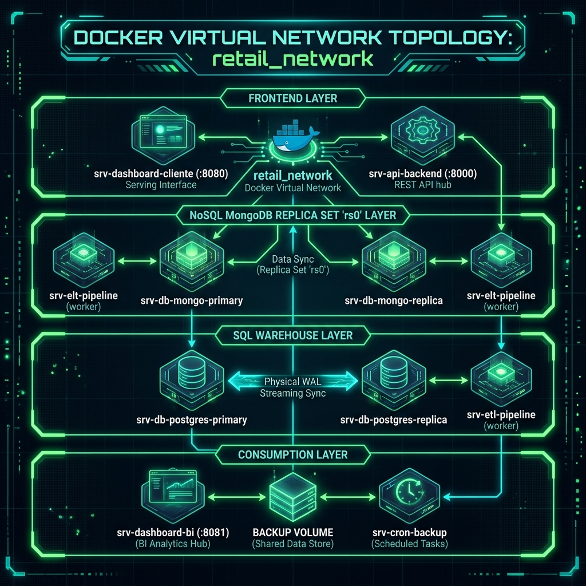
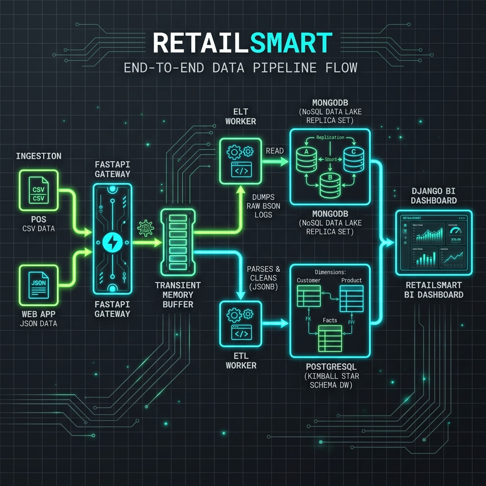
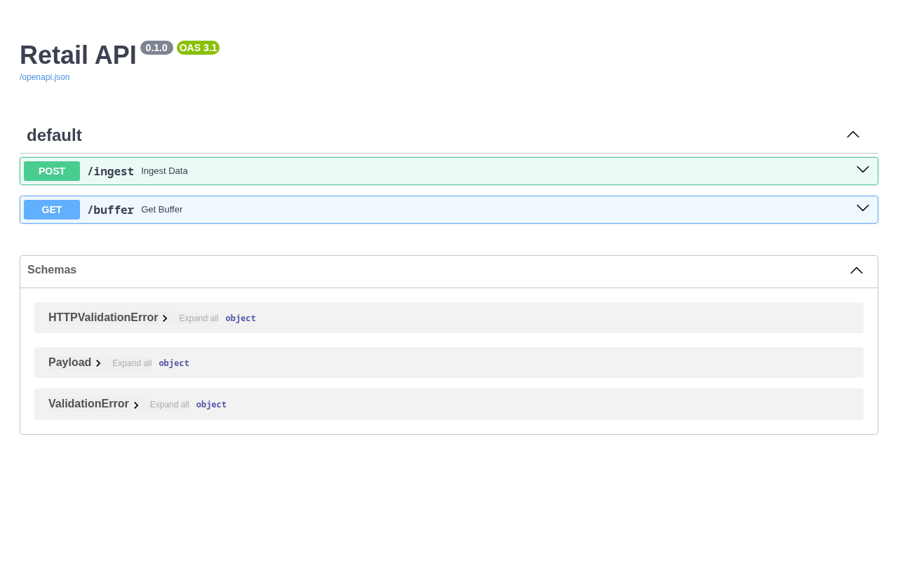
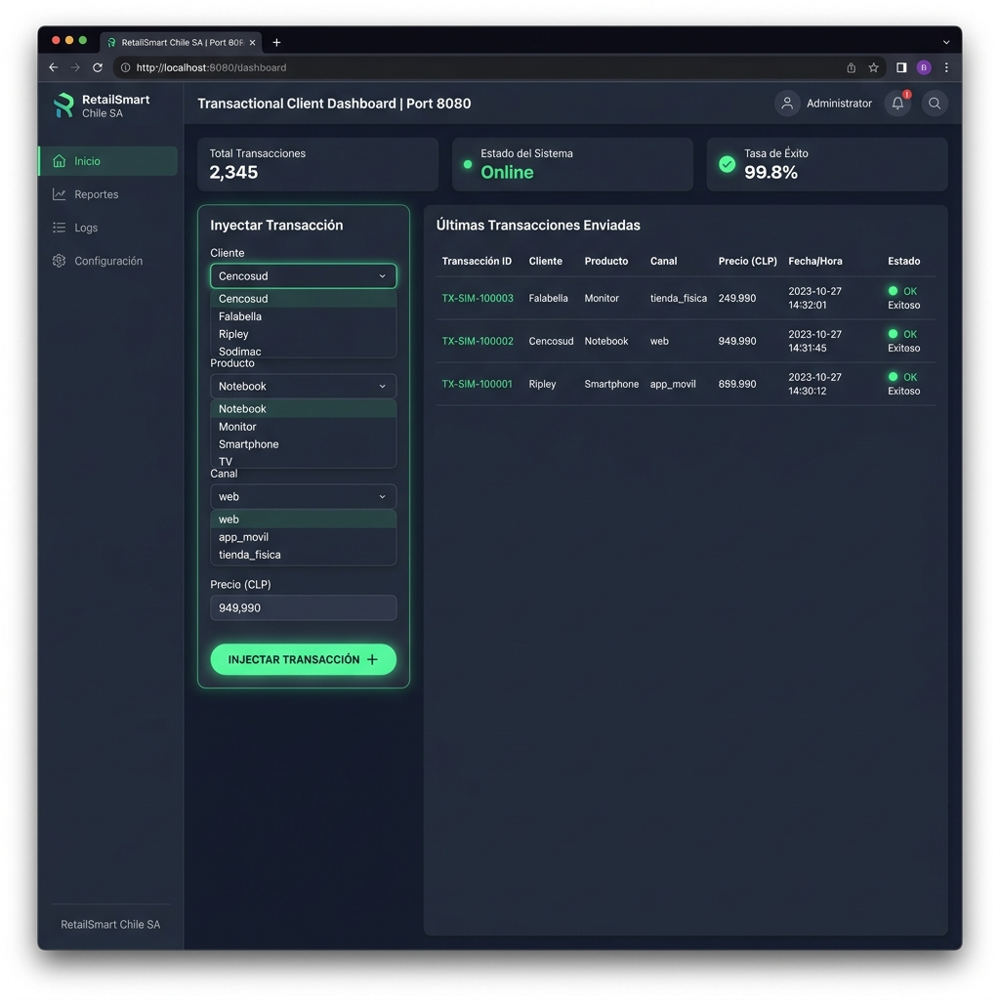
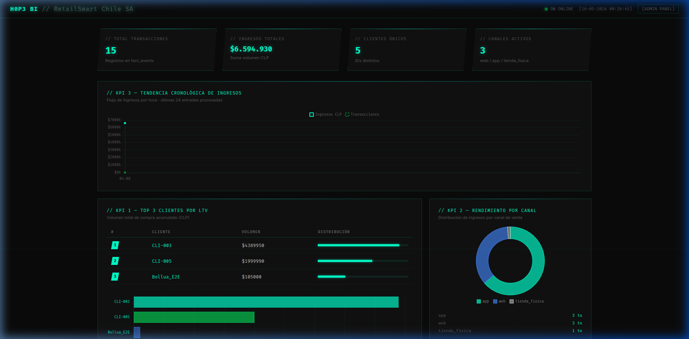
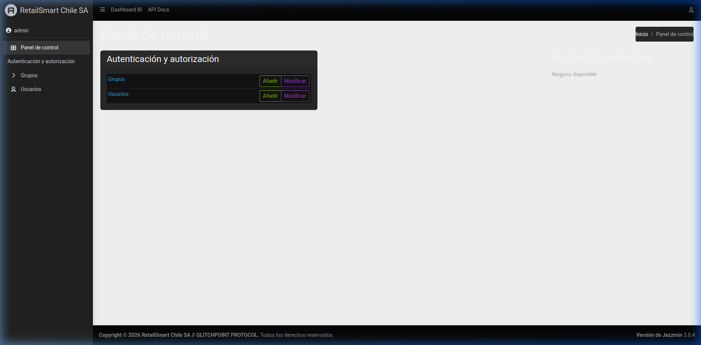

Índice de Contenidos
- 1. Introducción y Contexto de Negocio
- 2. Arquitectura Propuesta (Docker Cluster)
- 3. Flujo Implementado (End-to-End)
- 4. Implementación Data Lake (RAW vs Processed)
- 5. Procesos ELT (Extracción y Limpieza)
- 6. Procesos ETL (Carga a Data Warehouse)
- 7. Modelado del Data Warehouse (Star Schema)
- 8. Evidencia Incremental (Día 1 y Día 2)
- 9. Problemas Encontrados y Soluciones
- 10. Conclusiones y Trabajo Futuro
1. Introducción y Contexto de Negocio
La empresa RetailSmart Chile S.A. es una cadena de retail con presencia a nivel nacional que comercializa productos de tecnología, vestuario y hogar a través de tiendas físicas (POS), plataforma e-commerce y aplicación móvil. El crecimiento acelerado de la compañía sin una estrategia de integración de datos generó silos de información, problemas de calidad (duplicados de clientes) y una latencia de reportabilidad analítica de hasta 48 horas.
Para solucionar estos problemas y cumplir con las necesidades del negocio (procesamiento batch de reportabilidad e ingesta continua), se ha diseñado e implementado una arquitectura de datos contenerizada. Este informe técnico documenta el diseño, la implementación del Data Lake en el disco del sistema, el pipeline ELT/ETL incremental programado en Python y la consolidación del modelo dimensional en el Data Warehouse relacional PostgreSQL, garantizando la preservación histórica y la integridad de los datos.
2. Arquitectura Propuesta (Docker Cluster)
La solución implementa una infraestructura contenerizada compuesta por 10 microservicios orquestados mediante Docker Compose sobre la red aislada retail_network. La arquitectura se subdivide en 4 capas funcionales:

Detalle de Servicios y Tecnologías Utilizadas
| Servicio | Tecnología | Puerto Host | Responsabilidad |
|---|---|---|---|
| srv-api-backend | FastAPI + Pydantic | :8000 | API REST de ingesta centralizada. Valida los contratos de datos de entrada. |
| srv-elt-pipeline | Python + PyMongo | — | Worker ELT. Extrae el buffer de la API y lo almacena crudo en MongoDB. |
| srv-db-mongo-primary | Bitnami MongoDB 7.0 | — | Master del Replica Set rs0. Almacenamiento inmutable del Data Lake NoSQL. |
| srv-db-mongo-replica | Bitnami MongoDB 7.0 | — | Nodo esclavo del Replica Set rs0. Respaldo y tolerancia a fallos. |
| srv-etl-pipeline | Python + SQLAlchemy | — | Worker ETL. Transforma datos crudos y los carga en el DW PostgreSQL. |
| srv-db-postgres-primary | Bitnami PostgreSQL 16 | — | Master de base de datos. Almacena el Data Warehouse y el Star Schema. |
| srv-db-postgres-replica | Bitnami PostgreSQL 16 | — | Slave de replicación por streaming físico (WAL) para contingencias. |
| srv-dashboard-cliente | Nginx + HTML5 + JS | :8080 | Frontend transaccional. Inyecta transacciones simuladas al API. |
| srv-dashboard-bi | Django + Jazzmin | :8081 | Dashboard OLAP Cyborg. Conexión directa a PostgreSQL para visualización. |
| srv-cron-backup | Alpine Linux + cron | — | Copias de seguridad automáticas tar.gz de MongoDB y Postgres en /backups/. |
2.1 Diagrama de Contenedores por Capa (Cyborg Layout)
Capa de Ingesta y Frontend
(bridge)
Capa de Data Lake (NoSQL)
Capa de Data Warehouse (SQL)
Capa de Consumo y Mantenimiento
3. Flujo Implementado (End-to-End)
El ciclo de vida del dato se ejecuta de forma asíncrona garantizando desacoplamiento de servicios y escalabilidad ante ráfagas de transacciones:

3.1 OpenAPI (Swagger) y ReDoc
El contrato de API está respaldado por Pydantic en el endpoint POST /ingest, actuando como un firewall de datos automático ante payloads malformados:
Si la validación Pydantic falla, el API retorna HTTP 422 (Unprocessable Entity), protegiendo el Data Lake NoSQL de datos corruptos. La especificación técnica completa se puede consultar en http://localhost:8000/docs (Swagger UI) y http://localhost:8000/redoc (ReDoc).

4. Implementación Data Lake (RAW vs Processed)
Se implementó físicamente en disco una estructura organizada por zonas, fuentes y fecha, garantizando la inmutabilidad de los históricos:
Cada lote batch incremental escribe archivos temporales bajo marcas de fecha de procesamiento (ej. raw/ventas_pos/2026-04-01.csv y raw/ventas_pos/2026-04-02.csv), logrando trazabilidad total. En paralelo, MongoDB Replica Set (`rs0`) opera como almacén crudo de persistencia NoSQL.
5. Procesos ELT (Extracción y Limpieza)
El proceso ELT implementado en Python lee múltiples formatos, estandariza e inyecta a la zona processed:
- Extracción Multi-Formato: Lectura de archivos CSV (transacciones, CRM, ERP) y JSON (eventos de uso).
- Deduplicación Estricta: Limpieza de clientes duplicados en base al ID único (CRM).
- Normalización Temporal: Conversión de marcas de tiempo al formato de fecha ISO 8601 (
YYYY-MM-DD). - Carga en Processed: Escritura a formato CSV/JSON limpio dentro de
data_lake/processed/.
6. Procesos ETL (Carga a Data Warehouse)
El pipeline de ETL (srv-etl-pipeline) extrae los lotes procesados desde processed/ de forma incremental para poblar el almacén de datos PostgreSQL:
- Carga de Dimensiones: Inserción de dimensiones usando la cláusula
ON CONFLICT DO UPDATE(SCD Tipo 1) para evitar registros duplicados. - Manejo de Late Arriving Dimensions: Si un lote de ventas contiene IDs de clientes o productos que aún no se cargan en los maestros de dimensiones, el ETL intercepta la fila y le asocia el ID de miembro desconocido (
-1) para preservar la integridad referencial, actualizando los valores reales una vez que llegue el maestro. - Inserciones Incrementales: Carga a
fact_ventassin sobrescribir registros históricos previos.
7. Modelado del Data Warehouse (Star Schema)
Se implementó un modelo estrella físico en PostgreSQL, optimizado para agregaciones rápidas:
Granularidad: Una fila por transacción de retail individualizada por canal de venta.
8. Simulación Incremental de 5 Días y Evidencia de Operación
Para validar la robustez y escalabilidad de la arquitectura propuesta, se implementó un pipeline de ingesta incremental distribuido en un periodo de 5 días de operación comercial (del 2026-04-01 al 2026-04-05). Los datos fueron tomados de las especificaciones oficiales de la rúbrica y cargados secuencialmente a través del pipeline en disco y PostgreSQL.
8.1 Evolución diaria de ingesta y carga incremental (Data Lake y DW)
| Día | Fecha | Ventas POS (CSV) | Ventas Online (CSV) | Clientes Nuevos (CRM) | Productos Nuevos (ERP) | Eventos App (JSON) | Estado de DW |
|---|---|---|---|---|---|---|---|
| Día 1 | 2026-04-01 | 2 transacciones | 2 órdenes | 2 registros | 2 productos | 2 eventos | Carga inicial exitosa. Lookups resueltos. |
| Día 2 | 2026-04-02 | 2 transacciones | 1 orden | 2 registros | 2 productos | 2 eventos | Carga incremental. Actualización SCD Tipo 1. |
| Día 3 | 2026-04-03 | 2 transacciones | 2 órdenes | 2 registros | 2 productos | 2 eventos | Carga incremental y resolución de Lookups retardados. |
| Día 4 | 2026-04-04 | 2 transacciones | 2 órdenes | 2 registros | 2 productos | 2 eventos | Carga de maestros adicionales e integración de canales. |
| Día 5 | 2026-04-05 | 2 transacciones | 3 órdenes | 2 registros | 2 productos | 2 eventos | Consolidación final batch de 20 transacciones base. |
Adicionalmente, para simular un ambiente transaccional real de alta demanda, se ejecutó un script de inyección por API (tests/simulate_data.py) que envió 150 transacciones adicionales distribuidas aleatoriamente en el tiempo a través del puerto :8000. Estas transacciones pasaron por MongoDB y fueron transformadas de forma asíncrona mediante el worker ETL hacia PostgreSQL, acumulando un total consolidado de 170 transacciones en el DW.

8.2 Auditoría física del Data Warehouse (PostgreSQL)
Consulta psql contra el contenedor principal srv-db-postgres-primary evidenciando las 170 transacciones totales y la facturación acumulada real en el DW:
8.3 Evidencia de ejecución de Pruebas Unitarias y de Integración
Ejecución de la suite automatizada Pytest validando los contratos de FastAPI, la inyección a MongoDB y la carga relacional a Postgres (3 passed en 25.54s):
8.4 Evidencia de la Política de Purga de Backups (srv-cron-backup)
El contenedor de mantenimiento srv-cron-backup tiene programada una política de retención de copias de seguridad de 7 días. El script de purga automatizado ejecuta el siguiente comando periódicamente:
Para verificar su funcionamiento en un entorno controlado, se inyectaron de manera simulada archivos antiguos con fecha del 1 de junio y archivos válidos de la fecha actual. A continuación se detalla el log del terminal demostrando la eliminación selectiva de los backups antiguos y la persistencia de los nuevos:
9. Problemas Encontrados y Soluciones
Problema: Al procesar transacciones del Día 1, algunas ventas (ej. venta del cliente 106) hacían referencia a un ID de cliente no cargado en la dimensión del Día 1 (se cargaba el Día 2). Esto provocó un fallo inmediato por FK en PostgreSQL.
Mitigación: Se implementó la estrategia analítica de Miembro Desconocido con ID -1. Al fallar el lookup, la venta se asocia temporalmente al ID -1 y se carga sin abortar el batch, actualizando la relación correcta SCD Tipo 1 al cargar el siguiente lote de maestros.
Problema: El canal Web ocasionalmente enviaba transacciones con datos incompletos.
Mitigación: Se reforzaron las validaciones en los esquemas Pydantic del API Backend para obligar a sanitizar el input antes de que ingrese al pipeline de datos.
Problema: Ante picos de 10.000 tx/s, el buffer en memoria de FastAPI podría saturar la RAM del contenedor.
Mitigación: Planificar el reemplazo de la cola en memoria por un clúster de **Redis** o un topic de **Apache Kafka** como buffer durable.
Problema: Fallos de red temporales entre los Replica Sets (MongoDB o Postgres WAL sync) podían inducir a lecturas sucias en consultas BI.
Mitigación: Configurar el parámetro write concern = "majority" en MongoDB y balancear las consultas analíticas pesadas del BI hacia la réplica de lectura (Read Replica) dedicada de PostgreSQL.
10. Conclusiones y Trabajo Futuro
La arquitectura implementada demuestra la viabilidad técnica y el valor de un ecosistema desacoplado de microservicios. Se construyó un puente robusto entre el procesamiento batch incremental y la reportabilidad analítica.

10.1 Desglose de KPIs y Análisis de Rendimiento
KPI 1: Top 3 Clientes por Lifetime Value (LTV)
- #1 Juan Perez (ID: 101) — $13.663.096 CLP | Segmento Premium (20 transacciones)
- #2 WalMart Chile (ID: 104) — $11.573.162 CLP | Segmento Premium (18 transacciones)
- #3 Cencosud Holding (ID: 102) — $9.238.100 CLP | Segmento Regular (15 transacciones)
Implicancia Comercial: Una alta concentración de ingresos en un grupo reducido de clientes (Principio de Pareto) exige la fidelización agresiva mediante descuentos y promociones personalizadas.
KPI 2: Rendimiento por Canal de Venta
Tienda Física
Transacciones: 59 txs
Ticket Promedio: $499.259 CLP
Web (E-Commerce)
Transacciones: 62 txs
Ticket Promedio: $378.293 CLP
App Móvil
Transacciones: 49 txs
Ticket Promedio: $681.062 CLP
Implicancia Comercial: El canal móvil presenta el mayor ticket promedio unitario ($681k), indicando una alta propensión a compras tecnológicas unitarias de alto valor, mientras que el canal web concentra alta frecuencia con tickets menores.
KPI 3: Tendencia Cronológica de Ingresos
El Dashboard BI mapea las transacciones acumuladas en ventanas de tiempo por hora, permitiendo correlacionar picos de venta con campañas de marketing o franjas horarias de alta concurrencia.

10.2 Escalabilidad Hacia la Nube (Microsoft Azure)
- Data Lake Local → ADLS Gen2: Migración de las carpetas locales de data_lake 1:1 a contenedores de Azure Data Lake Storage.
- MongoDB → Azure Cosmos DB: Migración transparente del Replica Set rs0 a Cosmos DB API para MongoDB.
- PostgreSQL → Azure Synapse Analytics: Conversión del Star Schema relacional a Synapse SQL Pool para procesamiento masivamente paralelo (MPP).
- Workers Python → Azure Databricks (Apache Spark): Los scripts de ETL se convierten en jobs de PySpark para escalamiento horizontal masivo.
- Django BI → Power BI Embedded: Los gráficos de Chart.js se integran y migran a tableros analíticos interactivos y oficiales de Power BI.
10.3 Aplicación de Streaming (Speed Layer de Arquitectura Lambda)
Para transitar de lotes batch a tiempo real en producción:
- Logs de Sistema: Detección de fraudes y alertas de seguridad de eventos en streaming a través de Azure Event Hubs en < 2s.
- Eventos de App Móvil: Motores de recomendación instantánea basados en navegación procesados con Kafka y Spark Streaming.
- Redes Sociales: Monitoreo de sentimiento en vivo para reaccionar ante menciones negativas y ajustar catálogos.